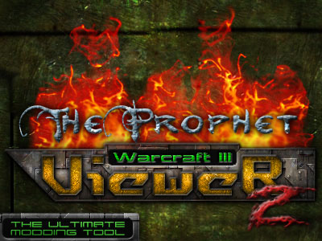

|

|
|
"It does all things others do, and a lot
more!" - "Il fait tout ce que
les
autres font, et même beaucoup plus !"
- KDEWolf Bienvenue dans le fichier d'aide de Warcraft III Viewer ! Je suis KDEWolf et je vais vous guider au travers du fichier d'aide de ce puissant outil créé par TheProphet. Vous apprendrez ici les concepts de base sur ce programme, ses caractéristiques, et comment les utiliser. J'espère que vous trouverez la réponse à vos questions dans ce fichier d'aide. Dans le cas contraire, mettez un message sur les forums de Wc3Campaigns, et nous pourrons certainement vous aider. On NE répondra PAS aux questions concernant le skinning, implantation des cartes, etc. Regardez dans la section Tutorial de Wc3c. "Mais alors que fait ce programme ?" Ce programme vous permet d'extraire/convertir des fichiers BLP pour les rendre éditables dans des éditeurs d'images normaux, comme Photoshop et Paint Shop Pro, d'extraire les modèles MDX du MPQ, et le plus important, de prévisualiser tout cela grâce à un moteur OpenGL rapide, complexe, loyal. Bien que le programme ait de nombreuses autres possibilités, telles que la prise d'écrans et la recherche dynamique, on en parlera plus tard. "Hé ! Mais j'ai déjà Image Extractor II et World Edit. Pourquoi j'aurais besoin de ce programme ?" En fait, vous n'en avez pas besoin. Mais après que vous l'ayez utilisé quelques fois et remarqué combien ses fonctions sont utiles et complexes, vous ne reviendrez plus à Wc3 Image Extractor II, ou même World Editor. Ce programme est à la fois très rapide, peut afficher les modèles personnalisés et les textures, une pléthore de caractéristiques utiles, un moteur de recherche, qui fonctionne non seulement avec les BLP comme Img Extractor, mais aussi avec les modèles. Oui, il remplace WinMPQ dans le dur travail qu'est la recherche du modèle que vous voulez extraire de cette énorme liste. Désormais, vous n'avez qu'à taper ce que vous cherchez dans la zone de texte, voir les résultats, double-cliquer sur ceux que vous désirez, et voilà! Le W3V a un système de rendu OpenGL, ce qui permet des textures plus lisses et de meilleure qualité. L'une des caractéristiques les plus impressionnantes de ce programme (vous l'adorerez certainement) c'est qu'il peut convertir/extraire TOUTES les textures du modèle que vous êtes en train de voir, et même mieux, il les sauvegarde automatiquement dans le bon dossier de Warcraft 3. Le système de chargement est le même que WE. Quand vous chargez un modèle du MPQ, il recherche d'abord les textures personnalisées dans les sous-dossiers de Warcraft 3, et s'il n'en trouve pas, il les charge du MPQ. Et l'une des choses les meilleures pour les skinners : quand vous éditez une texture et la modifiez, vous n'avez pas besoin de recharger W3V (ou le gros et lent WE), vous n'avez qu'à utiliser la commande de rechargement. Simple, clair. Il met à jour tout seul (mais rappelez-vous que vous devez toujours convertir le TGA en BLP pour que ça marche). Il vous permet aussi de parcourir votre disque-dur grâce à une arborescence, pour rechercher les modèles et les textures sur votre disque-dur, et pour les convertir/prévisualiser rapidement et simplement. Bien, on pourrait résumer tout cela en une seule phrase : "Il fait tout ce que les autres font, et même beaucoup plus !". Rappelez-vous que c'est un outil créé principalement pour les skinners, mais qui va bien aussi pour les gens qui veulent seulement extraire des modèles, convertir des fichiers, prévisualiser des unités, etc. Je vous assure que vous passerez un bon moment en utilisant ce programme ;) "Mais de quoi ai-je besoin pour le lancer ?" Ce programme se présente sous la forme d'un exécutable seul. Cela signifie que vous n'avez besoin que du fichier .EXE que vous venez de télécharger. Mais soyez conscient qu'il utilise OpenGL, donc qu'il sera plus lent sur une carte qui n'a pas d'accélération 3D. À la base, si vous pouvez lancer Warcraft 3, vous pouvez lancer ce programme. Commençons! Si c'est la première fois que vous lancez W3V, il va automatiquement rechercher votre installation de Warcract 3. S'il ne peut pas la trouver, il vous demande le dossier. La première impression que vous avez est : il y a deux fenêtres. L'une est l'arborescence du MPQ/du disque dur, qui affiche les modèles et/ou les textures qui s'y trouvent. L'autre ressemble à une grosse fenêtre bleue, avec quelques options dans les menus. Il s'agit de l'écran de prévisualisation, où vous pouvez voir le modèle ou la texture sélectionnée, ou même les modèles/textures personnalisés, puisque ce programme a été fait pour aider la communauté des skinners tout d'abord. Description des Fonctions: Arborescence : elle affiche les modèles/textures contenus dans le fichier MPQ ou sur votre disque-dur (fichiers locaux). Elle comporte trois boutons radio : l'un affiche les fichiers MDX AVEC (bien que vous puissiez le désactiver) les textures (personnalisées ou pas), l'autre seulement les BLP, et le dernier les fichiers locaux. La structure arborescente est un moyen simple et rapide pour accéder aux modèles et textures. Le panneau en bas est l'afficheur de mesh. Avec lui vous pouvez afficher/cacher les mesh des modèles (très utile). P.S. : les mesh sont les "parties" des modèles, qui sont composés de différents matériaux ou méthodes de blending. Vous pouvez en savoir plus à ce propos grâce à des tutoriels sur les modèles. Fenêtre principale : la grosse fenêtre bleue (par défaut) est l'endroit ou vous visualisez les objets désirés. P.S. : la couleur du joueur affichée ici est dans des tons vert/jaune. Le Menu : on va parler ici des options des menus et de leurs effets. Mais avant cela il est important de connaître les mouvements de la caméra. Ils se font principalement par la souris, mais quelques-uns nécessitent de maintenir des touches pendant l'utilisation de la souris. Bouton gauche + mouvement = Fait tourner la caméra suivant deux directions. Ctrl + bouton gauche + mouvement = Fait tourner la caméra suivant la troisième direction. Boutons gauche + droit + mouvement = Zoomer plus ou moins. Bouton droit + mouvement = Translation dans le plan de l'écran. Bouton du milieu + mouvement = Zoomer plus ou moins. Roulette de la souris = Zoomer plus ou moins. La plupart des mouvements de caméra peuvent se faire grâce à une séquence des précédents. Les options dans le menu et leurs descriptions respectives sont : FICHIER > OUVRIR- Ctrl+O Ouvre un modèle ou une texture de votre disque, pour le voir/convertir. FICHIER > OUVRIR MPQ Vous permet de choisir le fichier MPQ à charger. FICHIER > QUITTER Quitte le programme VUE > REGISTRE Affiche le registre où les textures chargées, les messages d'erreur, etc. sont consignés. VUE > ARBORESCENCE - Ctrl+H Affiche/Cache l'arborescence. VUE > RÉINITIALISER LA VUE - Ctrl+R Replace la caméra à sa position initiale et recharge le modèle et les textures. VUE > CAPTURE D'ÉCRAN Sauvegarde la vue dans un fichier BMP/TGA/JPG, avec possibilité de choix de qualité. VUE > CAPTURE RAPIDE - Ctrl+S Sauvegarde la vue dans un fichier JPG, sans options, dans le répertoire du programme. VUE > RECHERCHE DANS LE MPQ - Ctrl+F Moteur de recherche : tapez ce que vous cherchez, et il sélectionnera les résultats possibles. Double-cliquez sur l'un deux pour que le programme le charge et vous l'affiche. RENDU > GÉOMÉTRIE CACHEÉ Affiche/cache la géométrie cachée du modèle, comme les lueurs, les effets spéciaux et compagnie. RENDU > TEXTURÉ Affiche le modèle avec ou sans ses textures respectives. RENDU > POINTS / FIL DE FER / REMPLI Affiche le modèle dans les modes suivants : seulement les points, fil de fer texturé, polygones remplis (par défaut). RENDU > COULEUR DE FOND Cette fonction vous permet de sélectioner la couleur de fond de l'affichage, fournissant des meilleurs contrasts et une coloration plus harmonieuse. Très utile pour une future édition de l'image. FICHIER OUVERT > EXTRAIRE MDX Vous permet de sauvegarder le modèle chargé dans un répertoire. C'est un moyen très utile pour rechercher des modèles et les extraire pour une édition future. FICHIER OUVERT > EXTRAIRE (ET CONVERTIR) BLP Vous permet de sauvegarder la texture chargée dans un répertoire, dans les formats suivants : BMP, JPG, TGA ou BLP. Qualité et profondeur ajustables. FICHIER OUVERT > NOMS DES TEXTURES UTILISÉES - Ctrl+I Affiche les noms des textures chargées par le modèle dans une nouvelle fenêtre (ne montre pas les textures dynamiques, comme les couleurs des joueurs et les lueurs, puisqu'ils n'ont pas de nom, et sont chargés pendant le jeu). FICHIER OUVERT > EXTRAIRE (ET CONVERTIR) LES TEXTURES UTILISÉES Une excellente fonction. Comme vous l'avez probablement deviné, cela sauvegarde toutes les textures utilisées par le modèle (affichées sur le panneau de gauche de la nouvelle fenêtre - elles peuvent être sélectionnées ou désélectionnées), ou en mode automatique, où il utilise les mêmes options pour tous les fichiers, ou en mode manuel, où vous choisissez les options individuellement. Il garde les chemins (on peut le choisir dans l'une des cases à cocher), donc vous n'avez qu'à extraire dans votre dossier de Warcraft 3 (par défaut) pour les avoir toutes prêtes à l'édition dans n'importe lequel de ces formats. Le programme peut écraser les fichiers existants ou non, selon votre choix. Il peut convertir dans les formats suivants : JPG, TGA, BMP et dans les profondeurs suivantes : 24 ou 32 bits. CONVERSION DE FICHIERS > BLP -> BMP, TGA ou JPG - Ctrl+C Une boîte de dialogue vous permet de sélectionner le fichier source, et une autre le fichier de destination. Conversion possible dans les formats suivants : BMP, TGA et JPG, avec profondeur au choix. CONVERSION DE FICHIERS > BMP, TGA ou JPG - > BLP - Ctrl+V C'est l'inverse de la fonction précédente, donc fonctionne de la même manière. Charge BMP, TGA ou JPG et convertit en BLP. AIDE > LANCER L'AIDE - F1 Affiche ce fichier d'aide. AIDE > À PROPOS Affiche la boîte de dialogue À propos, avec les crédits, les droits d'auteur, des liens, et les adresses e-mail, et une image (faite par KDEWolf) et peut-être quelques petites choses cachées... ;) Bon c'est pas le tout, le fichier d'aide se termine ici. J'espère que j'ai répondu à votre question. Si ce n'est pas le cas, postez un message sur les forums de Wc3Campaigns, et on vous aidera certainement. Sentez-vous libre et n'hésitez pas à signaler les bugs, les erreurs, faire des suggestions, ou n'importe quoi d'autre. J'espère que ça vous a été utile. Et rappelez-vous qu'on va mettre à jour ce programme avec des caractéristiques encore plus puissantes. Vérifiez souvent ! Traduction du
fichier d'aide par TheProphet
|
|
Copyright 2003 - TheProphet - Tous droits
réservés |